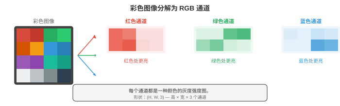
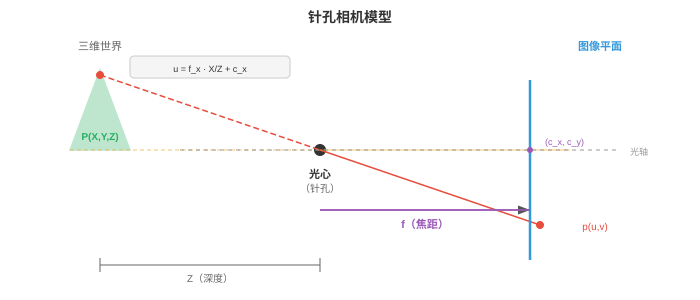
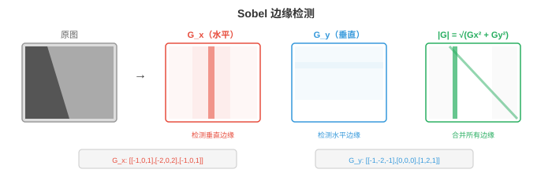
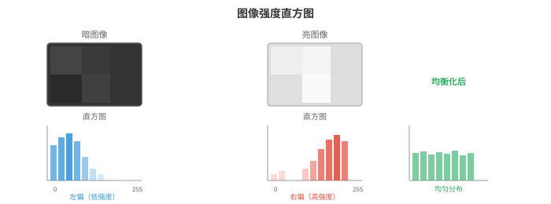
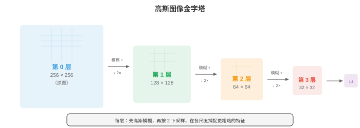

图像基础¶
图像基础介绍数字图像在被任何模型处理之前，如何表示、形成与预处理。本节涵盖像素、色彩空间（RGB、HSV、YCbCr、LAB）、针孔相机模型、卷积、边缘检测（Sobel、Canny）、直方图和特征描述子（SIFT、ORB），构成低层视觉工具箱。
- 数字图像（digital image）是由数字组成的二维网格。网格中的每个单元都是一个像素（pixel，picture element），其数值表示强度或颜色。灰度图像是单个二维矩阵，每个像素保存一个亮度值；对于 8 位图像，该值通常从 0（黑）到 255（白）。
大白话
图片本质上是一张数字表，每个格子记录一个位置有多亮或是什么颜色。
- 彩色图像将其扩展为三个通道。在 RGB 色彩空间中，每个像素保存三个值：红、绿、蓝的强度。
大白话
彩色像素不是一个数字，而是红、绿、蓝三盏小灯各自有多亮。
- 彩色图像是一个形状为（高度、宽度、3）的三维张量（矩阵）。以不同强度混合这三个通道，就能产生完整的可见颜色光谱。

大白话
图像的第三个维度就是颜色通道；把三张灰度表按同一位置叠起来，就还原出彩色图。
- 位深度（bit depth）决定每个通道能够表示多少种不同的强度等级。
大白话
位深度决定每个颜色能分成多少档，档数越多，亮暗变化越细腻。
- 8 位图像每个通道有 \(2^8 = 256\) 个等级，因此可表示 \(256^3 \approx 16.7\) 百万种颜色。16 位图像每个通道有 65,536 个等级，适用于医学成像和 HDR 摄影等需要区分细微强度差异的场景。
大白话
三个通道的档位相乘就是颜色总数；16 位能记录更细小的亮度差别，但文件也更大。
- RGB 便于显示，但其他色彩空间更适合不同任务。
大白话
RGB 适合直接给屏幕显示，却不一定最方便做分割、压缩或感知比较。
- HSV（Hue、Saturation、Value，色相、饱和度、明度）将颜色信息与亮度分开。色相是纯颜色（色轮上 0-360 度），饱和度表示颜色的鲜艳程度（0 = 灰色，1 = 纯色），明度表示亮度。HSV 适用于基于颜色的分割，因为无论光照条件如何，都可以只对色相设阈值。在 HSV 中检测“红色物体”比在 RGB 中容易得多。
大白话
HSV 把“是什么颜色”和“有多亮、鲜不鲜”拆开，所以找红色物体时可以主要盯色相。
- YCbCr 将亮度（Y，即感知亮度）与色度（Cb、Cr，即颜色差信号）分离。这是 JPEG 压缩和视频编解码器使用的色彩空间。人类视觉对亮度比对颜色更敏感，因此可以以更低分辨率存储色度（色度子采样），而几乎不会造成可感知的损失。
大白话
YCbCr 把人眼最敏感的明暗单独保存，颜色细节可以压缩得更粗而不太容易看出来。
- LAB（CIELAB）的设计目标是：两个颜色之间的数值距离对应于感知差异。LAB 空间中相同幅度的步长，对人眼看起来也是相同幅度的变化。L 通道表示明度，A 从绿色到红色，B 从蓝色到黄色。需要按感知均匀性比较颜色时会使用 LAB。
大白话
LAB 尽量让“坐标差多少”和“人眼觉得差多少”对应，适合按视觉相似度比较颜色。
- 图像形成（image formation）描述三维场景如何变为二维图像。最简单的模型是针孔相机（pinhole camera）：场景的光线穿过一个微小孔洞，投射到孔洞后方的传感器平面上。世界坐标中的点 \((X, Y, Z)\) 投影为像素坐标 \((u, v)\)：
大白话
相机把三维点按深度缩放后压到二维平面；离相机越远，同样大小的东西看起来越小。
- 这个 3x3 矩阵是内参矩阵（intrinsic matrix） \(K\)。它编码相机内部属性：焦距 \(f_x, f_y\)（镜头会聚光线的强度）以及主点 \((c_x, c_y)\)（光轴与传感器的交点，通常接近图像中心）。对于给定的相机和镜头组合，这些参数是固定的。
大白话
内参描述相机自身的“眼睛规格”：放大能力和光轴落在传感器的哪里。

- 外参（extrinsic parameters）描述相机在世界中的位置：旋转矩阵 \(R\)（3x3，见第 02 章）和平移向量 \(t\)（3x1）。它们共同将世界坐标转换为相机坐标。完整投影为：
大白话
外参描述相机放在世界里的姿势；内参加外参，才完整决定一个世界点落到哪一个像素。
- 其中，\(\mathbf{P} = [X, Y, Z, 1]^T\) 是齐次坐标中的三维点，\(\mathbf{p} = [u, v, 1]^T\) 是投影后的像素。矩阵 \([R \mid t]\) 为 3x4，由旋转和平移并排组成。这些都是第 02 章的线性代数内容。
大白话
齐次坐标把平移也装进矩阵乘法，方便统一写出完整的相机投影。
- 真实镜头会产生畸变（distortion）。
大白话
镜头并不完美，边缘位置的直线可能被拍弯或位置偏移。
-
径向畸变（radial distortion）会将直线弯曲为曲线（桶形畸变使图像向外鼓起；枕形畸变使图像向内挤压）。
大白话
径向畸变越靠近画面边缘越明显，桶形向外鼓、枕形向内缩。
-
切向畸变（tangential distortion）产生于镜头与传感器没有完全平行的情况。
大白话
镜头没装正时会产生切向偏移，像整张图被轻微推歪。
- 相机标定通过已知图案（如棋盘格）的图像，同时估计内参和畸变系数，再校正（去畸变）图像。
大白话
拍几张已知尺寸的棋盘格，就能反推出相机参数，再把弯曲的照片校直。
- 空间滤波（spatial filtering）是经典图像处理的基础。滤波器（filter）或核（kernel）是一个小矩阵（通常为 3x3 或 5x5），在图像上滑动。在每个位置，滤波器的值与重叠图像块逐元素相乘并求和，产生一个输出像素。这是二维卷积（2D convolution），也是 CNN（第 02 节）的核心操作；区别在于，这里的滤波器权重由人工设计，而不是学习得到。
大白话
小矩阵像一块滑动模板，在每个位置和周围像素做加权求和，从而突出或平滑某种局部模式。
- 这是第 06 章一维卷积的二维扩展。滤波器决定操作检测什么：不同滤波器检测不同特征。
大白话
卷积核的数字写法决定它是在找边缘、做模糊，还是检测别的纹理。
- 模糊（blurring）通过平均相邻像素来平滑图像。方框滤波器（box filter）对所有邻居赋予相同权重。
大白话
模糊就是让一个像素参考邻居的平均值，细节被抹平，噪声也会减弱。
- 高斯滤波器（Gaussian filter）按照二维高斯分布（第 05 章）加权邻居，为近处像素赋予更高权重、为远处像素赋予更低权重。高斯模糊是最常见的平滑操作，其参数为 \(\sigma\)：\(\sigma\) 越大，平滑越强。
大白话
高斯模糊更信任近邻；\(\sigma\) 越大，参考范围越宽，图像越柔和。
- 中值滤波（median filtering）不使用加权平均，而是以像素邻域的中位数替换该像素。它特别适合去除椒盐噪声（随机黑白像素），同时保留边缘，因为中位数对离群值具有稳健性（如第 04 章所述）。
大白话
中值滤波不容易被一个特别亮或特别暗的坏点带偏，所以去椒盐噪声时能保住边缘。
- 边缘检测（edge detection）识别像素强度急剧变化的边界。边缘包含图像的大部分结构信息；只凭物体的边缘也能识别物体。
大白话
边缘就是亮暗变化突然的地方，物体轮廓和很多形状信息都集中在那里。
- Sobel 算子（Sobel operator）使用两个 3x3 滤波器，估计水平方向和垂直方向的梯度：
大白话
Sobel 用两张固定模板分别测横向和纵向变化，快速估计每个位置是不是边缘。
- 用 \(G_x\) 与图像卷积得到水平方向梯度（对垂直边缘响应强），用 \(G_y\) 得到垂直方向梯度（对水平边缘响应强）。
大白话
竖直边缘会让左右方向变化大，水平边缘会让上下方向变化大，因此两个核各有侧重。
- 梯度幅值 \(\sqrt{G_x^2 + G_y^2}\) 和方向 \(\arctan(G_y / G_x)\) 共同描述每个像素处的边缘强度和方向。这是第 03 章梯度在图像域中的对应物。
大白话
幅值表示边缘有多强，方向表示边缘朝哪边变化；两者合起来才完整。

- Canny 边缘检测器（Canny edge detector）是边缘检测的黄金标准。它包含四步：
- 用高斯滤波器平滑图像以降低噪声。
- 计算梯度幅值和方向（使用 Sobel）。
- 非极大值抑制（non-maximum suppression）：只保留沿梯度方向上的局部最大值像素，从而细化边缘。
- 滞后阈值处理（hysteresis thresholding）：使用高、低两个阈值。高阈值以上的像素是确定边缘；两个阈值之间的像素只有与确定边缘连通时才是边缘；低阈值以下的像素被丢弃。
大白话
Canny 先去噪、算梯度、把粗边缘变细，再用强弱两个阈值保留连贯的边缘。
- Canny 的两个阈值使它比单阈值更稳健：强边缘总会保留，弱边缘仅在属于连续边缘结构时保留。
大白话
双阈值既不轻易丢掉弱但连续的边，也不会把孤立噪声当成边缘。
- 频域（frequency domain）分析可以揭示在空间域中难以观察的模式。二维傅里叶变换（2D Fourier transform）（第 03 章一维形式的扩展）将图像分解为不同频率和方向的二维正弦模式之和：
大白话
傅里叶变换把图片换成“不同变化速度的波”来观察，便于区分平滑区域、边缘和噪声。
- 低频对应平滑、缓慢变化的区域（天空、墙面）。高频对应急剧变化（边缘、纹理、噪声）。幅度谱（magnitude spectrum）显示每个频率上的能量大小，相位谱（phase spectrum）编码空间排列方式。
大白话
低频像大块明暗，高频像细线和纹理；幅度看强弱，相位保留这些变化在图中的位置关系。
- 低通滤波（low-pass filtering）去除高频，从而平滑图像（等价于空间域中的高斯模糊）。高通滤波（high-pass filtering）去除低频，突出边缘和精细细节。带通滤波（band-pass filtering）只保留一个频率范围，适用于纹理分析。
大白话
低通保留慢变化、去掉细节；高通保留细节、突出边缘；带通只挑某一段变化速度。
- 在实践中，对大滤波器而言，频域滤波可能比空间卷积更快，因为空间域卷积等价于频域中的逐元素乘法（卷积定理（convolution theorem））。这直接联系到第 03 章的傅里叶变换性质。
大白话
大卷积核在空间域逐格计算很慢，换到频域后变成逐元素相乘，可能更省事。
- 直方图（histograms）概括像素强度的分布。直方图统计每个强度值对应的像素数量（8 位图像为 0-255）。它就是第 04 章的频数分布应用于像素值。
大白话
直方图不看像素在哪里，只统计各种亮度分别出现了多少次。

- 暗图像的直方图集中在左侧（低值），亮图像的直方图集中在右侧。低对比度图像的直方图较窄，高对比度图像的直方图宽而分散。
大白话
直方图靠左说明整体偏暗，范围窄说明明暗差别小，分布宽通常表示对比度高。
- 直方图均衡化（histogram equalisation）将直方图拉伸至完整强度范围，以改善对比度。其思路是找出一种映射，使像素强度的累积分布函数（CDF）近似线性。这直接应用了第 04 章的 CDF 概念。
大白话
均衡化重新安排亮度，让原本挤在一小段范围里的像素铺开，画面看起来更有层次。
- Otsu 方法（Otsu's method）自动寻找将图像分为前景和背景的最佳阈值。它尝试所有可能的阈值，选择使类内方差最小（等价地，使类间方差最大）的阈值。这与第 04 章的方差概念相同，只是应用于像素强度总体。
大白话
Otsu 自动试各种明暗分界，选一个让前景内部和背景内部尽量相似、两类彼此尽量分开的阈值。
- 特征提取（feature extraction）识别图像中可用于匹配、识别和三维重建的独特点或区域。好的特征应当可重复（在不同视角下可再次找到）、有区分性（可与其他特征区分）并且计算高效。
大白话
好特征要像可靠地标：换个角度还能找到，和别处不混淆，计算也不能太慢。
- 角点检测（corner detection）寻找图像强度沿多个方向显著变化的点。平滑区域在任意方向上的变化都很小；边缘只在一个方向上变化；角点至少在两个方向上变化，因此局部唯一，是可靠的地标。
大白话
平面没变化、直线只在一个方向变化，而角点两个方向都变化，所以最容易被认出来。
- Harris 角点检测器（Harris corner detector）在每个像素处分析结构张量（structure tensor）（也称二阶矩矩阵）：
大白话
结构张量把一个小窗口里各方向的梯度变化汇总起来，用来判断这里像平面、边还是角点。
-
其中 \(I_x\) 和 \(I_y\) 是图像梯度（用 Sobel 计算），\(W\) 是局部窗口，\(w\) 是高斯权重函数。\(M\) 的特征值（第 02 章）告诉你特征类型：
-
两个特征值都小：平坦区域（没有特征）。
大白话
两个方向都几乎没有变化，说明这里是一块平坦区域。
-
一个大、一个小：边缘。
大白话
只有一个方向变化明显，说明这里更像一条边缘。
-
两个都大：角点。
大白话
两个方向都变化明显，说明这里很可能是角点。
-
大白话
两个特征值分别代表两个方向的变化：都小是平面，一大一小是边缘，都大才像角点。
- Harris 不显式计算特征值，而是使用角点响应函数：\(R = \det(M) - k \cdot (\text{trace}(M))^2\)，其中 \(\det(M) = \lambda_1 \lambda_2\)，\(\text{trace}(M) = \lambda_1 + \lambda_2\)（两者均见第 02 章）。大的正 \(R\) 表示角点。常数 \(k\) 通常为 0.04-0.06。
大白话
Harris 用行列式和迹把两个方向的变化压成一个分数，分数很正时就把位置当作角点。
- Shi-Tomasi 检测器将其简化为 \(R = \min(\lambda_1, \lambda_2)\)，直接检查较小的特征值是否足够大。实践中它略微更稳定。
大白话
Shi-Tomasi 只看两个方向里较弱的那个，只有两个方向都足够强才算可靠角点。
- 斑点检测（blob detection）寻找与周围环境不同的区域。与作为点特征的角点不同，斑点具有特征尺度。
大白话
角点是一个位置，斑点是一块明显不同的区域，还要记录它大概有多大。
- SIFT（Scale-Invariant Feature Transform，尺度不变特征变换，Lowe，2004）在多个尺度检测斑点，并构建对旋转、尺度不变且对光照变化部分不变的描述子。其工作过程为：
- 使用逐渐增大的 \(\sigma\) 进行高斯模糊，建立尺度空间（scale space）（见下文）。
- 在跨尺度的高斯差分（Difference of Gaussians，DoG）中寻找极值。
- 优化关键点位置，并移除低对比度点和边缘响应。
- 基于局部梯度方向分配主方向。
- 依据关键点周围 16x16 图像块中的梯度直方图，构建 128 维描述子。
大白话
SIFT 在大小不同的版本里找稳定点，再记录周围梯度方向，因此旋转、缩放后仍较容易匹配。
- SURF（Speeded-Up Robust Features）使用方框滤波器和积分图近似 SIFT，以获得更快的计算速度。ORB（Oriented FAST and Rotated BRIEF）是一个快速的开源替代方案：它将 FAST 角点检测器与 BRIEF 二进制描述子结合，并加入旋转不变性。
大白话
SURF 用近似计算加速 SIFT，ORB 则用更轻量的角点和二进制描述子换速度。
- HOG（Histogram of Oriented Gradients，方向梯度直方图）描述子将图像分为小单元，在每个单元内计算梯度方向的直方图，并在单元块之间归一化。HOG 捕捉边缘方向的分布，而这对物体形状高度信息化。在深度学习之前，HOG + SVM（第 06 章）是行人检测和物体识别的主流方法。
大白话
HOG 不记每个像素的精确颜色，而是统计小块里边缘朝向，借此描述人的轮廓和形状。
- 图像金字塔（image pyramids）以多种分辨率表示图像。
大白话
同一张图保留大中小多个版本，模型就能同时看整体和细节。
-
高斯金字塔（Gaussian pyramid）通过反复模糊和下采样（将分辨率减半）构建。每一层都是原图的更粗略版本。
大白话
高斯金字塔每次先平滑再缩小，得到越来越粗的图像。
-
拉普拉斯金字塔（Laplacian pyramid）存储相邻高斯层之间的差异，捕捉每一步下采样丢失的细节。拉普拉斯金字塔可逆：可以从它重建原始图像。
大白话
拉普拉斯金字塔专门保存每次缩小丢掉的细节，所以配合低分辨率图还能还原原图。

- 尺度空间（scale space）形式化了物体在不同尺度存在的思想。一棵树是大斑点；树上的一片叶子是小斑点。要检测两者，就需要跨尺度搜索。图像的尺度空间是用逐渐增大的 \(\sigma\) 对图像进行高斯卷积所生成的图像族：
大白话
尺度空间就是用不同强度的模糊生成一组图，让算法能分别寻找大物体和小物体。
- 其中 \(G\) 是标准差为 \(\sigma\) 的二维高斯函数。跨多个尺度持续存在的特征，比噪声更可能是有意义的结构。尺度空间是 SIFT 的理论基础，也是现代计算机视觉中多尺度处理的基础，包括目标检测（第 03 节）中的特征金字塔网络。
大白话
一个特征在多个模糊程度下都稳定出现，更可能是真实结构而不是偶然噪声。
编程任务（使用 CoLab 或 notebook）¶
-
加载一张图像，将其转换为不同色彩空间（RGB、HSV、LAB），并可视化各通道。观察颜色信息在各空间中的分布为何不同。
import jax.numpy as jnp import matplotlib.pyplot as plt from PIL import Image import numpy as np # Create a synthetic test image with distinct colours H, W = 128, 256 img = np.zeros((H, W, 3), dtype=np.uint8) img[:, :64] = [255, 50, 50] # red img[:, 64:128] = [50, 255, 50] # green img[:, 128:192] = [50, 50, 255] # blue img[:, 192:] = [255, 255, 50] # yellow # Add a brightness gradient for y in range(H): scale = 0.3 + 0.7 * y / H img[y] = (img[y] * scale).astype(np.uint8) img_jnp = jnp.array(img, dtype=jnp.float32) / 255.0 # Manual RGB to HSV conversion def rgb_to_hsv(rgb): r, g, b = rgb[..., 0], rgb[..., 1], rgb[..., 2] maxc = jnp.max(rgb, axis=-1) minc = jnp.min(rgb, axis=-1) diff = maxc - minc + 1e-7 # Hue h = jnp.where(maxc == minc, 0.0, jnp.where(maxc == r, 60 * ((g - b) / diff % 6), jnp.where(maxc == g, 60 * ((b - r) / diff + 2), 60 * ((r - g) / diff + 4)))) s = jnp.where(maxc < 1e-7, 0.0, diff / maxc) v = maxc return jnp.stack([h / 360, s, v], axis=-1) hsv = rgb_to_hsv(img_jnp) fig, axes = plt.subplots(2, 3, figsize=(14, 8)) for i, (ch, name) in enumerate(zip([img_jnp[...,0], img_jnp[...,1], img_jnp[...,2]], ['Red', 'Green', 'Blue'])): axes[0, i].imshow(ch, cmap='gray', vmin=0, vmax=1) axes[0, i].set_title(f'RGB: {name}'); axes[0, i].axis('off') for i, (ch, name) in enumerate(zip([hsv[...,0], hsv[...,1], hsv[...,2]], ['Hue', 'Saturation', 'Value'])): axes[1, i].imshow(ch, cmap='gray', vmin=0, vmax=1) axes[1, i].set_title(f'HSV: {name}'); axes[1, i].axis('off') plt.suptitle('RGB vs HSV Channels') plt.tight_layout(); plt.show() -
使用二维卷积从零实现 Sobel 边缘检测和高斯模糊。将它们应用于图像，并比较结果。
import jax import jax.numpy as jnp import matplotlib.pyplot as plt def conv2d(image, kernel): """2D convolution (valid mode) from scratch.""" H, W = image.shape kH, kW = kernel.shape out_h, out_w = H - kH + 1, W - kW + 1 output = jnp.zeros((out_h, out_w)) for i in range(out_h): for j in range(out_w): patch = image[i:i+kH, j:j+kW] output = output.at[i, j].set(jnp.sum(patch * kernel)) return output # Create a test image: white rectangle on dark background img = jnp.zeros((64, 64)) img = img.at[15:50, 20:45].set(1.0) # Add some noise key = jax.random.PRNGKey(42) img = img + jax.random.normal(key, img.shape) * 0.05 # Sobel filters sobel_x = jnp.array([[-1, 0, 1], [-2, 0, 2], [-1, 0, 1]], dtype=jnp.float32) sobel_y = jnp.array([[-1, -2, -1], [0, 0, 0], [1, 2, 1]], dtype=jnp.float32) # Gaussian blur kernel (5x5, sigma=1) ax = jnp.arange(-2, 3, dtype=jnp.float32) xx, yy = jnp.meshgrid(ax, ax) gaussian = jnp.exp(-(xx**2 + yy**2) / (2 * 1.0**2)) gaussian = gaussian / gaussian.sum() # Apply filters gx = conv2d(img, sobel_x) gy = conv2d(img, sobel_y) edges = jnp.sqrt(gx**2 + gy**2) blurred = conv2d(img, gaussian) fig, axes = plt.subplots(1, 4, figsize=(16, 4)) for ax, data, title in zip(axes, [img, edges, blurred, gx], ['Original', 'Edge Magnitude', 'Gaussian Blur', 'Horizontal Gradient']): ax.imshow(data, cmap='gray') ax.set_title(title); ax.axis('off') plt.tight_layout(); plt.show() -
从零实现直方图均衡化，并将其应用于一张低对比度灰度图像。比较均衡化前后的直方图。
import jax.numpy as jnp import matplotlib.pyplot as plt # Create a low-contrast image (values clustered in a narrow range) key = __import__('jax').random.PRNGKey(42) img = __import__('jax').random.uniform(key, (128, 128)) * 0.3 + 0.3 # values in [0.3, 0.6] def histogram_equalise(img, n_bins=256): """Histogram equalisation for a grayscale image.""" # Quantise to bins bins = jnp.linspace(0, 1, n_bins + 1) hist = jnp.histogram(img, bins=bins)[0] # Compute CDF cdf = jnp.cumsum(hist) cdf_normalised = (cdf - cdf.min()) / (cdf.max() - cdf.min()) # Map each pixel through the CDF indices = jnp.clip((img * n_bins).astype(jnp.int32), 0, n_bins - 1) equalised = cdf_normalised[indices] return equalised eq_img = histogram_equalise(img) fig, axes = plt.subplots(2, 2, figsize=(12, 10)) axes[0, 0].imshow(img, cmap='gray', vmin=0, vmax=1) axes[0, 0].set_title('Original (Low Contrast)'); axes[0, 0].axis('off') axes[0, 1].imshow(eq_img, cmap='gray', vmin=0, vmax=1) axes[0, 1].set_title('After Histogram Equalisation'); axes[0, 1].axis('off') axes[1, 0].hist(img.ravel(), bins=64, color='#3498db', alpha=0.8) axes[1, 0].set_title('Histogram Before'); axes[1, 0].set_xlim(0, 1) axes[1, 1].hist(eq_img.ravel(), bins=64, color='#e74c3c', alpha=0.8) axes[1, 1].set_title('Histogram After'); axes[1, 1].set_xlim(0, 1) plt.tight_layout(); plt.show() -
从零实现 Harris 角点检测器。在简单图像中检测角点，并将其可视化。
import jax import jax.numpy as jnp import matplotlib.pyplot as plt def harris_corners(img, k=0.05, threshold=0.01): """Harris corner detection from scratch.""" # Compute gradients with Sobel sobel_x = jnp.array([[-1, 0, 1], [-2, 0, 2], [-1, 0, 1]], dtype=jnp.float32) sobel_y = jnp.array([[-1, -2, -1], [0, 0, 0], [1, 2, 1]], dtype=jnp.float32) # Pad image for valid convolution to preserve size img_pad = jnp.pad(img, 1, mode='edge') H, W = img.shape Ix = jnp.zeros_like(img) Iy = jnp.zeros_like(img) for i in range(H): for j in range(W): patch = img_pad[i:i+3, j:j+3] Ix = Ix.at[i, j].set(jnp.sum(patch * sobel_x)) Iy = Iy.at[i, j].set(jnp.sum(patch * sobel_y)) # Structure tensor components Ixx = Ix * Ix Iyy = Iy * Iy Ixy = Ix * Iy # Gaussian smoothing of structure tensor (approximate with window sum) w = 3 # window half-size R = jnp.zeros_like(img) pad_xx = jnp.pad(Ixx, w, mode='constant') pad_yy = jnp.pad(Iyy, w, mode='constant') pad_xy = jnp.pad(Ixy, w, mode='constant') for i in range(H): for j in range(W): sxx = jnp.sum(pad_xx[i:i+2*w+1, j:j+2*w+1]) syy = jnp.sum(pad_yy[i:i+2*w+1, j:j+2*w+1]) sxy = jnp.sum(pad_xy[i:i+2*w+1, j:j+2*w+1]) det = sxx * syy - sxy * sxy trace = sxx + syy R = R.at[i, j].set(det - k * trace * trace) # Threshold corners = R > threshold * R.max() return R, corners # Test image: checkerboard pattern (lots of corners) block = 16 n = 4 checker = jnp.zeros((block * n, block * n)) for i in range(n): for j in range(n): if (i + j) % 2 == 0: checker = checker.at[i*block:(i+1)*block, j*block:(j+1)*block].set(1.0) R, corners = harris_corners(checker) cy, cx = jnp.where(corners) fig, axes = plt.subplots(1, 3, figsize=(14, 4)) axes[0].imshow(checker, cmap='gray') axes[0].set_title('Checkerboard'); axes[0].axis('off') axes[1].imshow(R, cmap='hot') axes[1].set_title('Harris Response'); axes[1].axis('off') axes[2].imshow(checker, cmap='gray') axes[2].scatter(cx, cy, c='#e74c3c', s=15, marker='x') axes[2].set_title(f'Detected Corners ({len(cx)})'); axes[2].axis('off') plt.tight_layout(); plt.show()